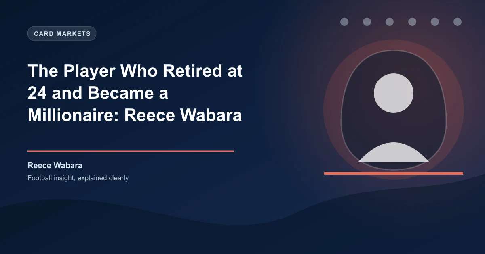

Most footballers spend their careers chasing the same dream: play as long as possible, earn as much as possible, and if they are lucky, stay in the game after retirement as a pundit or coach. Reece Wabara did something different. He walked away from professional football at 25, at a point when most players are entering their prime, because he had already built something bigger than the game itself.
Wabara's fashion label, Maniere de Voir — known to everyone as MDV — is now worth ?83 million. It turns over ?35 million a year. It has a flagship store on London's Oxford Street, one of the most expensive retail strips in the world. And it was started with ?15,000 that Wabara saved from his wages as a League One footballer, running the business from his phone while sitting on team buses travelling to away games.
Wabara was not a bad player. Far from it. He came through Manchester City's academy at a time when the club was spending hundreds of millions on global superstars, and he held his own. He captained England at U16 level, represented the U17s, U18s, and U19s, and earned caps for the England U20 side. At City, he trained alongside Sergio Aguero, David Silva, and Vincent Kompany. He was a right-back with pace, composure, and a modern understanding of the position.
But Manchester City's emergence as a global superpower meant the pathway for academy graduates was narrowing. Wabara went out on loan to Ipswich Town, then Barnsley, then Doncaster Rovers. He played games. He developed. He proved he could handle senior football. But the Premier League never came. In 2014, he left City permanently for Doncaster. He later joined Wigan Athletic, then Bolton Wanderers. By 2017, at 25, he was out of contract and facing the reality that his ceiling in football was League One.
Most players in that situation fight to extend their careers. They drop down to League Two, take a pay cut, try to prove themselves again. Wabara did not. He had something else waiting.
MDV started in 2015, two years before Wabara retired. He noticed a gap in the market: premium streetwear that sat between the mass-market high street brands and the unaffordable luxury houses. He wanted to create clothes that felt exclusive but were priced for people who actually wore streetwear. He invested ?15,000 — basically his entire savings as a footballer — into the first collection.
The early days were not glamorous. Wabara handled customer service himself. He packed orders in his bedroom. He posted on Instagram at 2am after returning from away matches. He ran the brand's social media accounts from his phone, responding to every comment and DM. His teammates at Wigan and Bolton watched him disappear into his phone after training, not playing games on his console but managing a business that, at the time, nobody outside his circle took seriously.
The turning point came in 2017. MDV's signature design — a box logo hoodie with clean, minimal branding — started gaining traction. Celebrities began wearing it. The Instagram following grew from thousands to tens of thousands. Wabara realised he had to choose: football or fashion. He chose fashion. He was 25 years old, out of contract, and instead of signing for another League One club, he walked away from professional football entirely.
MDV's growth after Wabara went full-time was explosive. The brand capitalised on the streetwear boom that saw brands like Supreme and Off-White dominate global fashion. But MDV differentiated itself with a distinctly British aesthetic — less in-your-face logo mania, more understated luxury. The quality was good. The pricing was smart. And Wabara's understanding of social media, honed during his playing days, gave MDV a direct line to its audience that traditional fashion brands could not replicate.
In 2020, during the pandemic when retail was collapsing, Wabara made the counterintuitive decision to open a physical flagship store. He secured a lease on Oxford Street — a bet that physical retail would survive. It paid off. The store became a destination. MDV was no longer just an online brand; it was a real business with a presence in the most famous shopping street in Britain.
By 2024, MDV had grown beyond streetwear into a full lifestyle brand, with women's collections, accessories, and limited-edition collaborations. Celebrities from the worlds of football, music, and entertainment were spotted in MDV. The brand was stocked in Selfridges and Harvey Nichols. Wabara's journey from a League One changing room to the fashion establishment was complete.
In 2024, the Sunday Times Young Rich List placed Wabara at number 19, with an estimated net worth of ?83 million. He sat above Gareth Bale and Harry Kane on the list — two of the most famous and highest-paid footballers in British history. For a former Manchester City youth player who never made a Premier League appearance and retired at 25, the symmetry was striking. He had not failed at football. He had simply found a different path to success.
Wabara has spoken openly about the transition. He credits his football background for his business discipline: the early starts, the work ethic, the ability to handle pressure and criticism. He also credits a piece of advice from a friend — Lewis Morgan, the founder of Gymshark, who told him early on that fashion was a relationship business and that authenticity would always beat advertising.
Reece Wabara's story matters because it challenges the narrative around footballers and money. The stereotype is that players are bad with finances, that they burn through their wages and end up broke. Wabara flipped that script. He used his modest football earnings as seed capital for a business that now generates more in a month than he earned in his entire playing career. He proved that the skills learned in football — discipline, teamwork, resilience — are transferable to any industry.
It also raises an interesting question for bettors and football analysts: how do you value a player beyond their on-pitch contributions? The market has started to recognise that players with business acumen, social media followings, and personal brands have commercial value that traditional scouting metrics miss. Some betting markets now even factor in off-pitch activities when pricing player performance and transfer odds. It is a reminder that the modern footballer is a brand, not just an athlete. For value betting tips on football markets, visit our daily predictions page.
Today, Wabara is 34 years old. MDV continues to grow. He has spoken about expanding into the US market and opening stores in New York and Los Angeles. He has invested in other businesses, mentored young entrepreneurs, and become a regular speaker at business events. And every now and then, he watches a football match, remembers the feeling of running out onto a pitch in front of thousands of fans, and knows he made the right call.
He did not quit football because he could not make it. He quit because he had already made it somewhere else.
Want to bet on the next generation of football talent? Get free football predictions updated daily, including emerging player markets and development league coverage.
Generate optimized accumulator combinations from today's AI-powered predictions. Set your target odds and get instant ticket suggestions.
Free Ticket Builder →